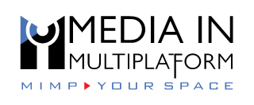

Media in Multiplatform
We take technology that isn't operationally proven yet, build a proof of concept inside your real production, push it until it breaks, and hand you something reliable enough to go live.
Indie creators fight the same fight with fewer resources. That's why I also build The Creator Toolbox.
The Creator Toolbox
Local-first AI tools for streamers and podcasters who earn from their content: auto-direct your cameras, read your audience, and commentate like a pro.
Everything here comes from 20 years inside broadcast. Need the enterprise version? That's Media in Multiplatform.

A value-added reseller and integrator for broadcasters and mainstream content creators. Every project follows the same four steps, because "it worked in the demo" isn't good enough on live air.
Bring the right vendors and your internal teams to one table.
Build the proof of concept inside a real production environment.
Deliberately push the entire workflow until the weak points show.
Turn the result into an operation your team can rely on every day.
Two partners that cover what broadcasters ask for most: finding their media and putting data on air.
Indie software for people who produce shows without a broadcast budget. Tools run on your own PC, so there are no cloud fees and your footage stays with you.
Commentary, not copy-paste. Reacting to and analyzing other people's content is a big part of streaming. These tools help you add real analysis and transformation on top of it, and are built to work within each platform's rules. Rules differ by platform, so check yours.
I've spent my career on the corporate side of the fight: broadcast crews, rights, budgets and zero tolerance for dead air. I also know the other side, where one person runs the camera, the chat and the clips, and a copyright strike can end a month's income.
Each side needs what the other already figured out. Broadcasters need indie speed. Creators need broadcast discipline. I build for both.
Tell me which side you're on. I read every message.